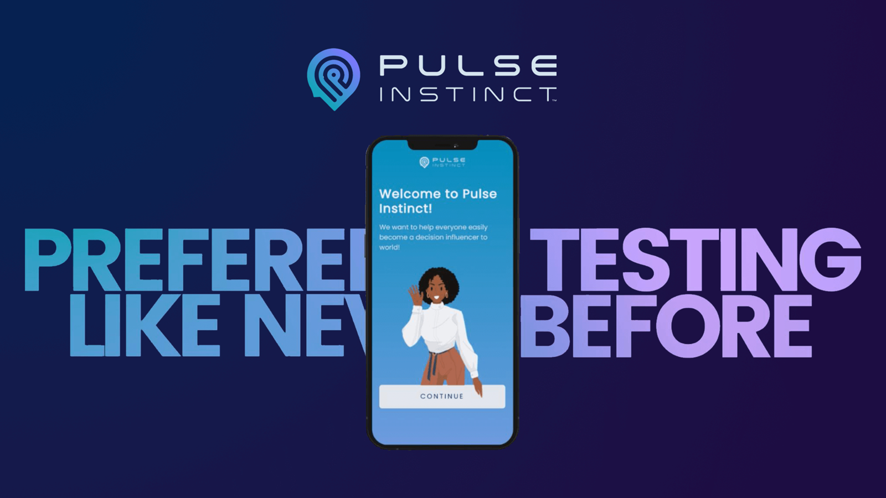
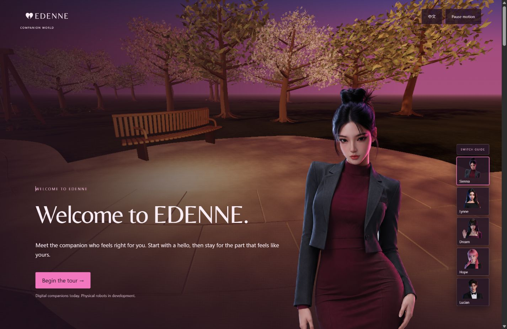

(Portfolio 2026)
Every case, with its evidence.
Ten projects from the current portfolio — strategy, identity, product and digital, each one opening on its full case study.

Robotist · Robotics · Brand & digital
Making robotics human.
A clear identity and a more considered path into robotics.

NeoLabCare · Personal care · Strategy, identity & digital
A daily ritual, reconsidered.
Strategy, identity and digital experience for a simpler daily ritual.

Vodkiss · Spirits · Identity & packaging
A little bottle. A whole occasion.
Bilingual identity and packaging, from first impression to the final label.

WeKwikGene · Research · Identity & digital platform
Science, shared.
An identity and digital platform for finding and sharing research materials.
GramLingo · Learning · Brand & game experience
Make room for play.
A warm learning world, built around questions, progress and a familiar companion.
Ancient Science of China · Cultural knowledge · Digital experience
Knowledge, made discoverable.
An editorial identity and a clearer way to explore a cultural catalogue.

BrainyBaobei · Self-reflection · Identity & digital experience
A little more of you.
A visual and digital language for exploring a personal reading.

Pulse Growth Engine · Creative operations · Product & workflow
From scattered tools to a shared workspace.
A product brief shaped by the practical work of managing content across projects.

Pulse Instinct · Preference research · Identity & product design
An instinct, made visible.
An identity and interface for a simple response: which one do you prefer?

Edenne · Companionship · Identity & spatial experience
A place for presence.
An independent companion world, shaped around welcome, character and continuity.
(Selected Work)
Transformation, not decoration.
The strongest work tells you what changed in the business — not just what files were delivered.
WeKwikGene · Life Sciences
Complex science. Clear experience.
Scientific platform strategy, identity and digital experience.

TTELG · Mobility
Movement with meaning.
Brand and digital system for an evolving mobility company.

Viva BioInnovator · Biotech
Deep science. Immediate credibility.
Turning complexity into investor and partner confidence.
Pulse Growth Engine · AI
From scattered tools. To a working system.
Agentic infrastructure for research, content, memory and workflow.

BrainyBaobei · Consumer
Ancient logic. Modern intimacy.
Making a Chinese metaphysical system feel personal and digital.

Ancient Science of China · Knowledge
Knowledge, made discoverable.
A digital gateway for historical Chinese knowledge systems.